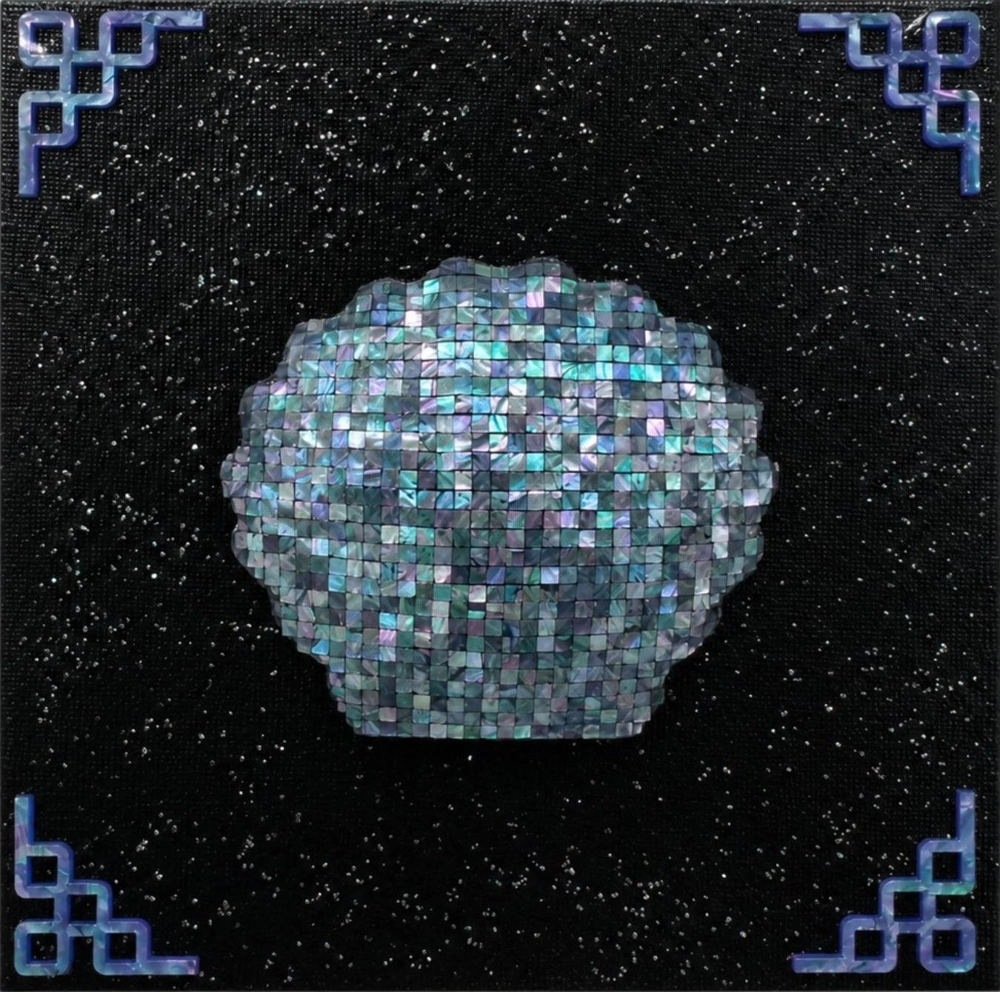

N차적 저작물BN-th Degree Derivative Works B
N-th Degree Derivative Works BN차적 저작물B
천연자개, 옻칠, 삼베 등 · 27.3 × 27.3 cm · 2026Natural mother-of-pearl, lacquer, hemp, etc. · 27.3 × 27.3 cm · 2026
자개의 근원인 '조개'를 원형(Original)으로 삼아 해체와 재구축을 거침으로써, 2차적 저작물로서 확장되는 창작의 순환을 담아낸다. 창살은 레트로 게임의 타일로, 자개는 픽셀로 치환했다. 이번 작업은 〈N차적 저작물〉 시리즈에 속한다.Taking the shell — the origin of all mother-of-pearl — as the Original, this piece dismantles and reconstructs it, tracing the creative cycle by which a work expands into a derivative. The lattice becomes the tile grid of a retro video game; the mother-of-pearl becomes its pixels. Part of the N-th Degree Derivative Works series.
전시 이력Exhibitions
- [예정] 2026.11.23 – 2026.11.29 나전칠기로 아트하는 法, 갤러리 비브, 서울, 대한민국[Upcoming] 2026.11.23 – 2026.11.29 Art by Law, in Najeonchilgi, Gallery VIV, Seoul, KR
- 2026.07.30 – 2026.08.02 어반브레이크 토이콘 서울 2026, 코엑스, 서울, 대한민국2026.07.30 – 2026.08.02 URBAN BREAK & TOYCON SEOUL 2026, COEX, Seoul, KR
- 2026.07.16 – 2026.07.23 여름, 빛을 켜다 단체전, W갤러리, 분당, 대한민국2026.07.16 – 2026.07.23 Summer, Light It Up, W Gallery, Bundang, KR